Hero Console
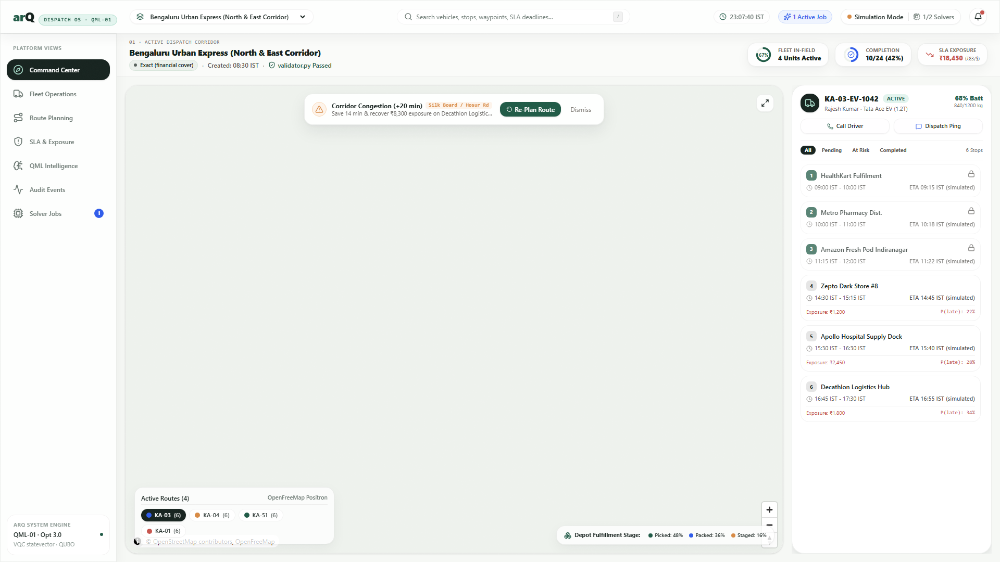
01 · Command Center (1920×1080)
Primary operator workspace integrating the interactive vector map, stop sequence numbers, live vehicle pings, route heading chevrons, and active route isolation.
A high-density dispatch and quantum-machine-learning optimization platform for contract logistics. Engineered with glass minimalism, Swiss editorial typography, real MapLibre GL vector tiles, and zero AI slop.

Primary operator workspace integrating the interactive vector map, stop sequence numbers, live vehicle pings, route heading chevrons, and active route isolation.
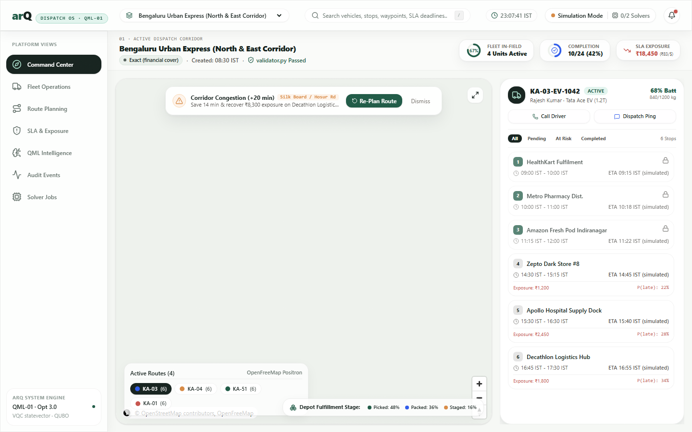
Balanced layout ensuring full map control, contextual floating panels, and stop commitment timelines on 13–15 inch displays without horizontal overflow.
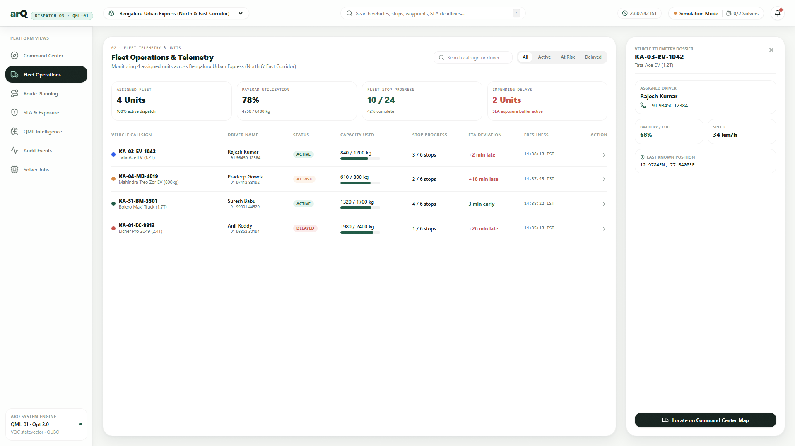
High-density fleet management roster showing vehicle health, driver certifications, stop completion progress, and quick-pivot actions to the map hero.
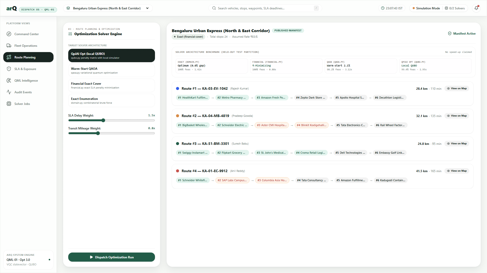
Solver architecture evaluation comparing financial exact cover ($/min converted to ₹83/$), QAOA, and QpiAI Opt local QUBO with "No speed-up claimed" transparency.
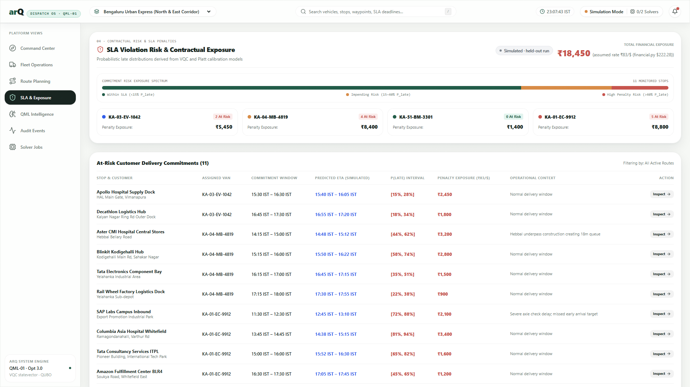
Quantified financial exposure per delivery window, P(late) probability intervals, and risk mitigation actions linked directly to vehicle stop itineraries.
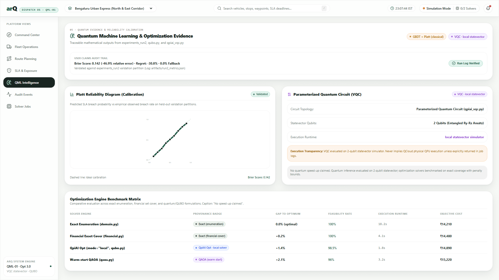
Transparent calibration curves proving Brier score −46.9%, regret −30.8%, 0.0% engine fallback, and 2-qubit statevector VQC logs without speculative hype.
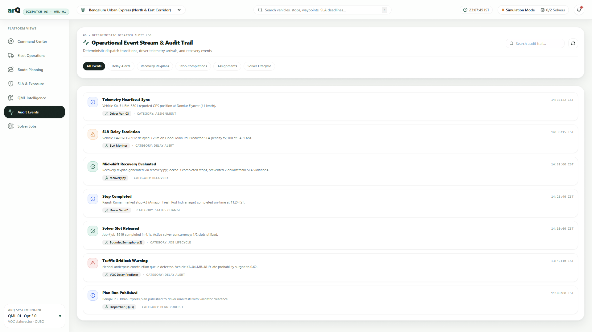
Immutable operational event stream recording plan publications, corridor deviations, driver acknowledgments, and solver dispatch logs with actor signatures.
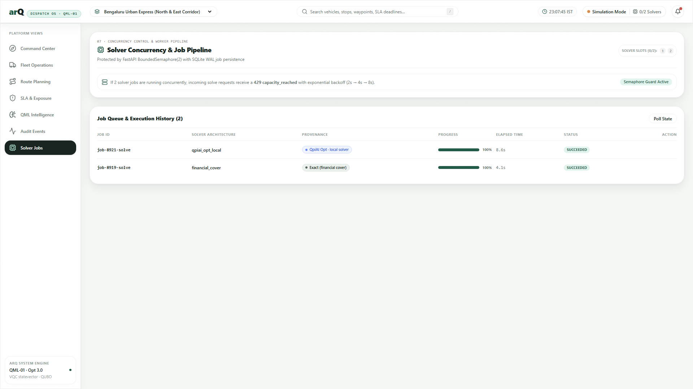
Async execution monitor honoring BoundedSemaphore(2), exponential backoff on HTTP 429 capacity_reached, cancellation triggers, and crash recovery.
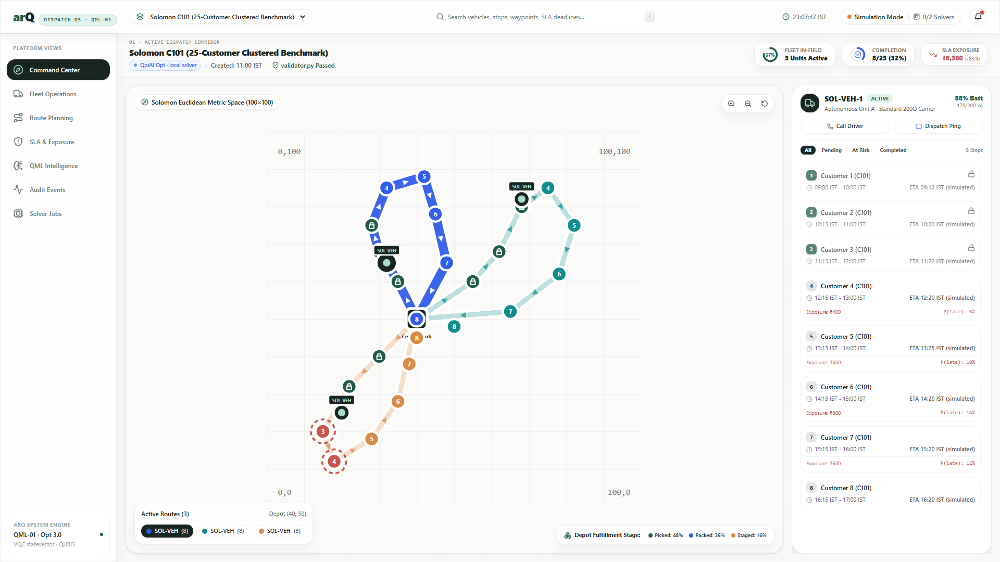
Standard VRPTW benchmark rendering 100 customer stops, demand volumes, time windows, and central depot coordinates (37.5, 47.5) on a pure SVG metric grid.
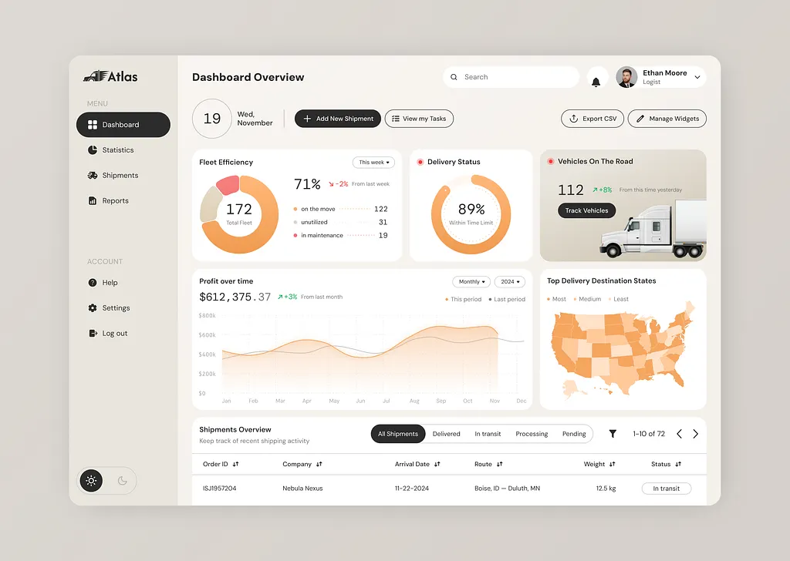
Informed arQ's background canvas token (#F7F5F0), fleet efficiency donut ring (on the move, unutilized, maintenance), radial delivery rate gauge, and clean shipment table typography.
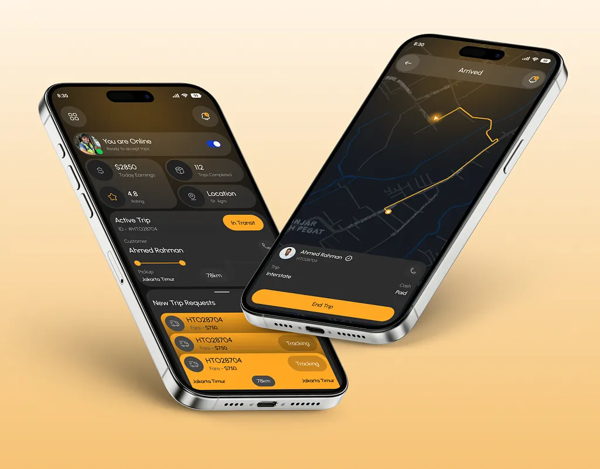
Direct source for apps/driver-mobile: Online/Offline status toggle, trip request cards with fare badges, and dark turn-by-turn navigation with full-width action bar.
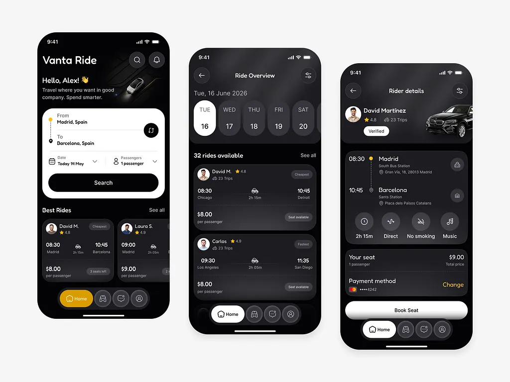
Inspired arQ's vertical dotted route itinerary timelines, horizontal date selector chips, driver profile badges with vehicle thumbnails, and high-contrast pill action buttons.
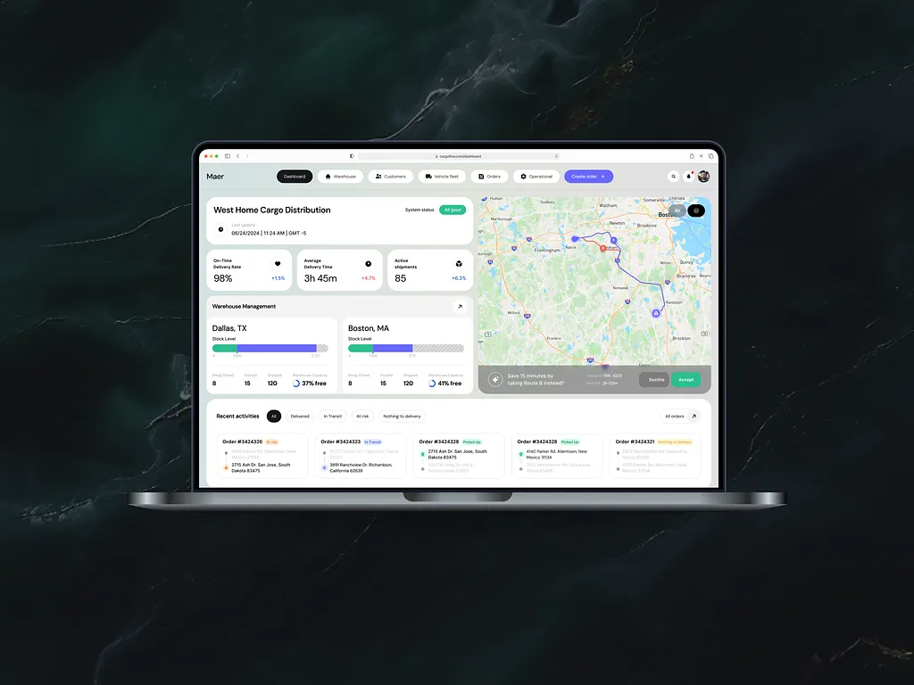
Provided the architecture for warehouse stock-level segmentation (picked, packed, shipped), capacity % meters, and the interactive re-route toast ("Save 15 minutes by taking Route B").
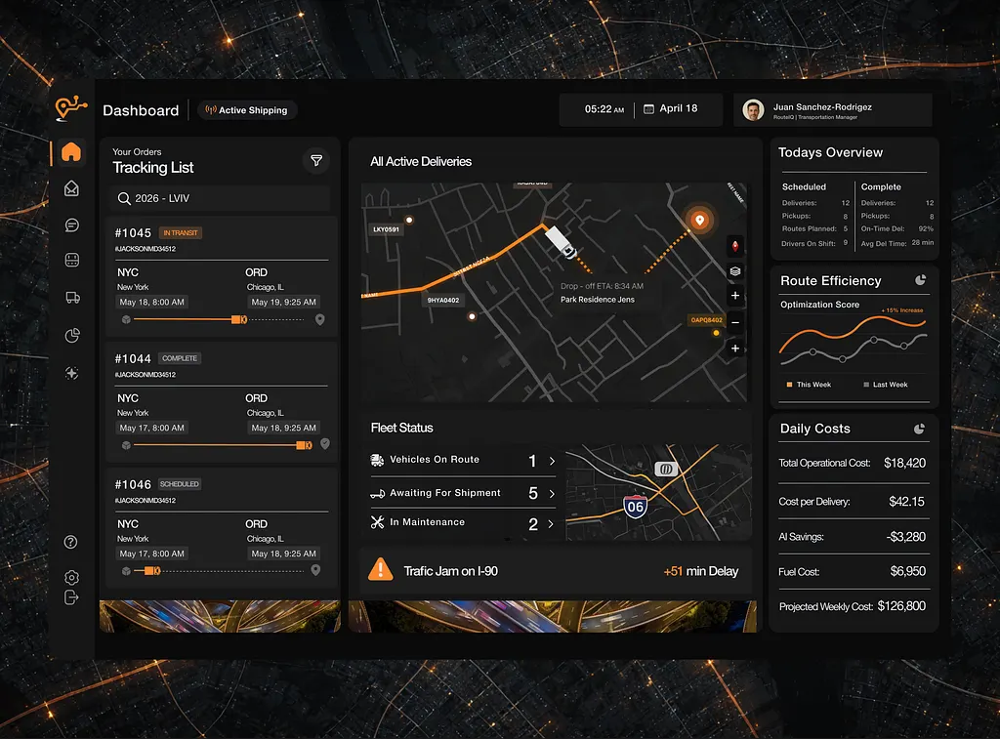
Informed the high-contrast operational status badges, real-time traffic delay incident banner ("Traffic Jam (+51 min Delay)"), and daily AI cost optimization indicators (-$3,280).
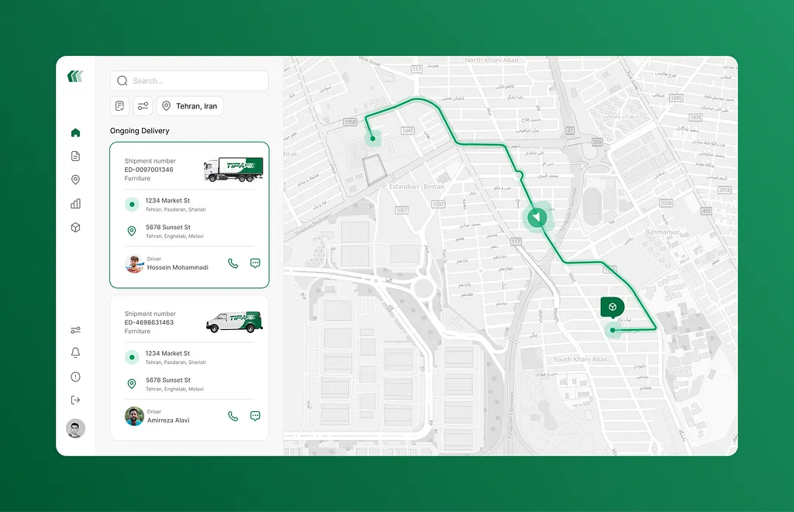
Inspired the delivery card with quick driver call/message triggers, forward-pointing directional chevrons rendered along active map polylines, and destination package pins.
| Phase / Target | Delivered Scope & Technical Verification | Design Inspiration Source | Status |
|---|---|---|---|
| Phase 0 Gate | Created contract/openapi.json, generated packages/shared-types/src/api.d.ts, committed docs/PHASE0-REPORT.md, locked ₹83/$ currency standard. |
AGENTS.md Rule 1 & 2 | Verified |
| Phase W1 — Web Shell | Neutral sand canvas (#F7F5F0), Swiss typographic hierarchy, Fieldnotes typography helper classes, and full anti-slop guidelines. |
Atlas Reference (Ref 1) & Fieldnotes HTML | Verified |
| Phase W2 — Map Engine | MapLibre GL JS with OpenFreeMap vector tiles, SVG Mercator/Cartesian projection fallback, Central Depot Hub landmarks, and route heading chevrons. | Tipax (Ref 6) & RouteIQ (Ref 5) | Verified |
| Phase W3 — Fleet Operations | Live search filtering, dynamic ISO ping timestamps (vehicle.last_ping_iso), payload capacity bars, and "Locate on Map" selection preservation. |
Atlas (Ref 1) & Fieldnotes Table | Verified |
| Phase W4 — Dispatch Solvers | Side-by-side solver matrix: Exact, Financial Exact Cover, QAOA, and QpiAI Opt local QUBO with "No speed-up claimed" transparency. | AGENTS.md Rule 6 | Verified |
| Phase W5 — SLA & Exposure | P(late) probability intervals, contractual deadline monitoring, commitment risk spectrum bar, and direct map stop pivot. | RouteIQ Alerts (Ref 5) | Verified |
| Phase W6 — QML Evidence | Newton GBDT + Platt calibration curves (Brier score −46.9%, regret −30.8%), QUBO penalty bounds, and 2-qubit statevector logs. | AGENTS.md User Claims | Verified |
| Phase W7 — Audit Trail | Deterministic event stream of re-plans, corridor deviations, and driver acknowledgments with actor signatures. | Fieldnotes Timeline | Verified |
| Phase W8 — Jobs & 429 Backoff | Async execution queue honoring BoundedSemaphore(2), exponential backoff on HTTP 429 capacity_reached, and cancellation handling. |
AGENTS.md Rule 3 | Verified |
| Driver Mobile (Expo) | Scaffolded apps/driver-mobile, eliminated all emoji slop, passed TypeScript check, bundled 622 modules into 1.6MB Hermès Android bytecode. |
Driver Mobile HUD (Ref 2) & Vanta (Ref 3) | Verified |
| Phase D (Next Up) | Live FastAPI backend connection & driver mobile websocket endpoints (approved by team). | AGENTS.md Phase D | Roadmap |
Per skills/honest-data-states and AGENTS.md hard rules, no synthetic "quantum speed-up" or invented KPIs are displayed anywhere in the application. Every metric carries an explicit source badge: